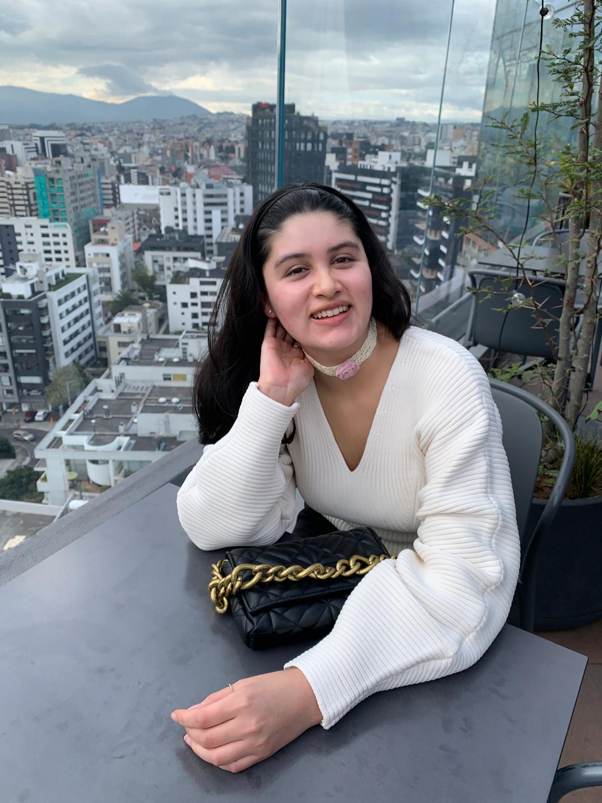

Hello, I'm Sofia Saltos. Welcome to my cultural connections page!

Cultural Shocks:
Individualism: One of the most surprising cultural shocks I encountered upon moving to Vancouver was the individualism of the people. In Ecuador, social conections and communal living are highly valued and apreciated, and people often spend time together in groups, wether it be famly or frinds. However, in Canada, I noticed that most people here tend to lead more solitary lives. This shift was very shcking, as I am used to a culture where being surrounded by family and friends is the norm.
Education and Traffic Etiquette: Another cultural shock for me was the level of education and awareness among Canadians, particularly concerning traffic rules and pedestrian rights. I was impressed by how drivers readily let pedestrians pass before their cars. In my country, that is not the same, and sometimes pedestrns will have to wait forever to simply cross the street.
What I miss the most about my country:
My Family: Being away from my family has been challenging, especially during significant events and celebrations like bithdays. The emotional support and love I receive from my family back home are ireplaceable.
Ecuadorian Food: I also deeply miss the delicious food of Ecuador. Traditional dishes that are rich in flavor and reflect my culture bring me comfort and a sense of belonging. While I have discovered new culinary experiences in Vancouver, nothing will evre compare to the taste of home-cooked ecuadorian meals.
What I love about Vancouver:
Diversty: One of the things I love the most about Vancuover is the diversity it offers. In Vancouver, I was amazed by the multitude of cultures, languages, and traditions coexisting in one place. This vibrant mix has broadened my perspective and allowed me to engage with people from various backgrounds, enriching my experience as an international student.
Outdoor Adventures: The breahttaking natural beauty surrounding Vancouver has captivated me. From the stunning mountains to the serene beaches, the opportuniteis for outdoor activities are endless. I love being able to hike, explore parks, and imerse myself in the beauty of nature.
My personal goal at this stage of my life:
My primary goal at this stage in my life is to immerse myself in my studies and learn as much as possible about my chosen career in cybersecutiy. I aim to build a strong foundation of knowledge and skills that will prepare me for future challenges in this rapidly evolving field. Additionally, I want to make meaningful connections with my peers, proffesors, and proffsionals in the industry, as these relationships can provide valuable support and opportunities. At the same time, I am thrilled to explore and enjoy the vibrant city of Vancouver, taking advantage of its diverse culture and stunning outdoors. Balancing my academic pursuits with experiencincing everything this city has to offer is a priority for me.